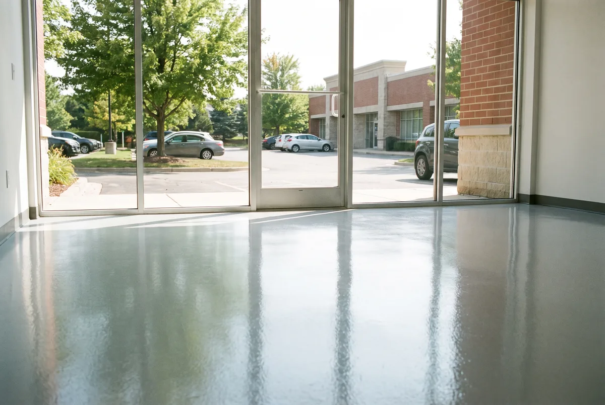

Floors for offices, clinics, retail and shop space — scheduled around lease dates, GC timelines and the hours you are actually open.
Call for a Free Estimate
Commercial floor work in Carmel is rarely a flooring decision. It is a schedule decision inside somebody else’s constraints — a lease that starts on the first, a general contractor with three trades stacked behind you, a landlord with opinions about alterations, and a business that cannot afford to be dark on a Tuesday.
We do a lot of this along the US 31 and Meridian office corridor, in Midtown and City Center retail, and in the medical and dental suites scattered through Hamilton County. This page is organized around those constraints rather than around coating chemistry, because that is where projects actually go wrong.
On most TI jobs the floor is one of the last things installed and one of the first things forgotten in the schedule. Two consequences follow.
The first is that we get squeezed. A three-week slip upstream in the build does not move the tenant’s opening date, so the compression lands on whoever is at the end — usually flooring. The honest answer is that material choice can absorb some of that. A fast-cure polyurea build gives foot traffic in hours and rolling loads the next day, where conventional epoxy wants several days between coats. It costs more per square foot and it buys back calendar.
The second is sequencing. Coating before drywall finishing means grinding dust and joint compound land on a fresh floor. Coating after casework is installed means we cannot cut a clean edge. The window is after paint, before trim and fixtures, and protecting it is worth a conversation with the GC at the preconstruction meeting rather than the week of.
If your opening date is fixed, tell us the date first and the finish second. We will work backward and tell you honestly whether it fits.
Four questions that cost nothing to ask now and a great deal to discover later.
Most commercial leases classify it as one. Get written approval before the grinder shows up, especially in multi-tenant buildings where the landlord has a standard finish schedule.
Some leases require alterations be removed at lease end. Grinding a coating back off costs more than putting it down, so this clause is worth reading before you commit.
Many Carmel office buildings restrict noisy trades to evenings and weekends, and some require freight elevator reservations. That changes the schedule and the price.
If the landlord is contributing, the floor may qualify. Getting it into the allowance instead of your own capital budget is usually just a matter of listing it in the scope early.
The floor touches almost every other trade, and a few specifics prevent most of the friction we see.
Slab access. We need the room empty and swept, with no stored material. On occupied jobs that means a staging plan, not a promise.
Temperature and HVAC. The slab needs to be within the material’s cure range and stable. In an unconditioned shell in February that means temporary heat, and it takes a day or two to bring a cold slab up rather than an hour.
Penetrations and thresholds. Floor boxes, trench drains and door transitions all get detailed by hand. Give us the electrical rough-in locations before we quote, because finding them mid-grind changes the number.
Protection after. A coating that is walkable is not yet fully cured. If the fixture crew is coming the next morning, we lay protection, and somebody has to own keeping it down.
Who is filling the joints. On a warehouse or shop slab, control joints should be filled with semi-rigid material before coating. It is frequently left out of scope entirely and it is what keeps wheel traffic from chipping joint edges into trenches.
Carmel commercial work falls into a handful of buckets, and each wants something different.
Office and professional suites. Appearance and low maintenance. A flake or solid build with a satin clear, light colors to help the lighting do its job.
Medical and dental. Seamless, light, easy to disinfect, with coved base so there is no corner at the wall for soil to collect in. Skip coarse aggregate that traps residue.
Restaurant and food prep. Urethane mortar rather than epoxy. Hot water, fats and caustic cleaners soften standard epoxy over time, and thermal shock from a steam line will delaminate it. Integral coved base is standard here.
Retail and showroom. Appearance-led, so this is where polished concrete or a decorative flake blend competes directly with a coating.
Light industrial and shop space. High-build epoxy with a urethane wear layer, aggregate in the traffic aisles, and the joint work described above.
Expect $4 to $12 per square foot installed, driven almost entirely by system rather than by size.
$4 to $6 covers a straightforward office, retail or warehouse build over a sound, bare slab.
$6 to $9 covers full flake or quartz broadcast, aggregate for traction, and safety striping.
$9 to $12 and up covers urethane mortar, coved base, drain detailing, and clinical or food-grade requirements.
Then the lines that vary by building rather than by finish. Removing carpet adhesive, VCT mastic or an existing coating adds $1.50 to $3.50 per square foot and is the most common reason two bids differ by five figures. Moisture mitigation adds $1.00 to $1.75 where slab testing calls for it. Off-hours phasing carries a stated premium. Slab repair gets quoted from a walkthrough, never from a photograph.
Our proposals name the system, the total mil thickness, the joint treatment and which zones get aggregate. If a competing bid leaves those out, the two documents are not describing the same floor and the cheaper one is cheaper for a reason you will find in year two.
A clean 3,000 square foot suite with no removal work can be prepped, coated and returned inside a long weekend using a fast-cure build. Add a day or two if there is carpet adhesive or old tile to grind off. The variable is almost always what is stuck to the slab, not the coating itself.
Almost always, and it is worth getting in writing before you sign the work order. Most Carmel commercial leases treat a floor coating as an alteration, and some require it be removed at lease end. Removal costs more than installation, so settle who owns the floor at turnover before anything is ground.
Yes, and for occupied offices along the Meridian corridor it is usually the only workable approach. We section the suite with containment, run dust-collected grinders, and coat one zone per night. There is a premium for off-hours work and it is normally smaller than the revenue lost to closing.
Roughly $4 to $12 depending on the system. Office and retail builds sit at the low end, flake or quartz in the middle, and food-service urethane mortar with coved base at the top. Slab preparation and any off-hours scheduling are quoted as their own lines.
Working on a home instead? See garage floor epoxy in Carmel or metallic epoxy flooring for finished lower levels.